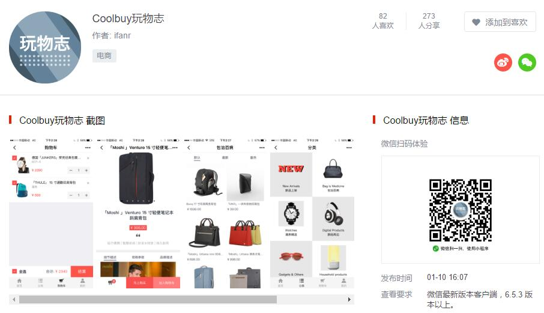
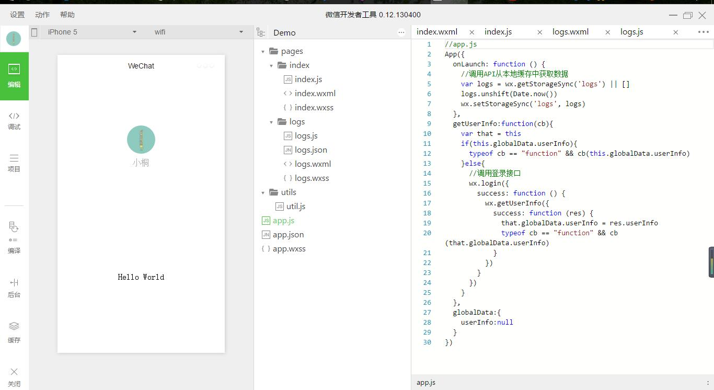
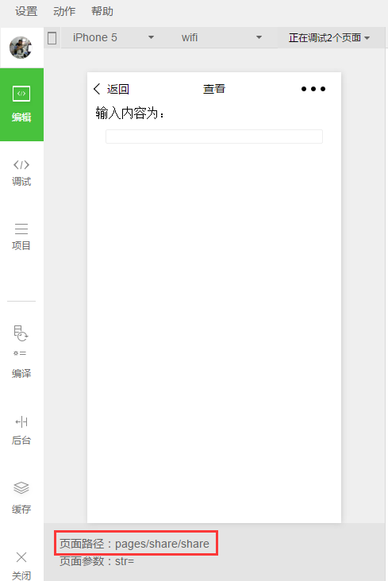

微信小程序
一些准备工作
官方开发工具
https://mp.weixin.qq.com/debug/wxadoc/dev/devtools/download.html?t=201715
官方文档
https://mp.weixin.qq.com/debug/wxadoc/dev/?t=201715
官方Demo
https://mp.weixin.qq.com/debug/wxadoc/dev/demo.html?t=201715
官方Demo下载后解压到文件夹，在开发工具中新建项目，填写信息，指定路径为解压的文件夹即可查看
推荐一些优秀的小程序
这两款是目前我看到的做的十分不错的小程序，最大限度的接近原生App的效果，功能也是十分全面，所以在这里推荐大家体验一下 

构建自己的第一个小程序
官方构建工具装好之后扫码登录微信 ，选择调试类型，这里选择本地小程序项目，即可添加自己的小程序项目。
新建小程序项目
- 点击添加项目 --> 填写AppID(没有可以选择无AppID) --> 填写项目名称 --> 选择项目目录(新项目路径选择一个空的文件夹)，此时项目目录下方会出现一个创建quick start项目的选项，可以快速帮你构建一个项目的完整目录。

- 此时你会看到开发者工具已经帮你建好了一些目录并有了一个简单的页面，我们先来梳理一下小程序的路径。

├───app.js // 小程序逻辑
├───app.json // 小程序公共设置
├───app.wxss // 小程序公共样式
├───utils // 用来放置工具类js文件
│ └───utils.js // 工具类js
└───pages // 项目页面开发目录，里面的每个子目录代表一个独立页面
├───index // index 页面目录
│ ├───index.js // index 页面逻辑
│ ├───index.wxml // index 页面结构
│ └───index.wxss // index 页面样式表
└───logs // logs 页面目录
├───logs.js // logs 页面逻辑
├───logs.json // logs 页面设置
├───logs.wxml // logs 页面结构
└───logs.wxss // logs 页面样式表
- 分析目录不难看出小程序的结构十分清晰，根目录下文件构建项目整个外部框架，里面的每个页面都建立在pages的目录下，而常用逻辑可以抽出来放在utils实现代码复用，提高编码效率。然而这个目录并不能满足我们的需求，所以要先按照自己的需求对这个目录进行简单修改。这里我以“玩物志”的小程序为例，对目录先进行处理。
├───app.js // 小程序逻辑
├───app.json // 小程序公共设置
├───app.wxss // 小程序公共样式
├───imgs // 用来放置小程序中的图片及icon
├───template // 用来放置小程序中的组件
├───utils // 用来放置工具类js文件
│ └───utils.js // 工具类js
└───pages // 项目页面开发目录，里面的每个子目录代表一个独立页面
├───index // index 页面目录
│ ├───index.js // index 页面逻辑
│ ├───index.wxml // index 页面结构
│ └───index.wxss // index 页面样式表
├───category // 这里按四个主页面建立四个文件夹
├───buy // 每个文件夹中都包含与文件夹同名的wxml,wxss,js,json四个文件
└───user
- 在pages中建立的页面都需要在根目录下的app.json文件中进行声明。这里要注意几点：
数组的第一项代表小程序的初始页面
小程序中新增/减少页面，都需要对 pages 数组进行修改，特别的，如果减少页面但是未修改pages的数组，编译会抛出异常
在这里修改数组后框架会自行去寻找路径中的文件，如果路径中的json文件内容为空的话，会抛出异常
Expecting 'STRING','NUMBER','NULL','TRUE','FALSE','{','[', got EOF | ^- 同样的，路径中js为空也会抛出“Page调用异常”的错误，所以要在js中加入“Page({})”
"pages":[
"pages/index/index",
"pages/category/category",
"pages/buy/buy",
"pages/user/user"
],
- 在开始我们的代码之前，先对整个小程序做全局配置，当然，所有的配置代码都在app.json中。这里可以参照官方给出的Api文档对小程序做全局配置。https://mp.weixin.qq.com/debug/wxadoc/dev/framework/config.html?t=201715
注意：json文件中不要写任何的注释，否则在编译过程中会抛出异常
另：window的样式会随着微信内部样式的变化而变化
"window": {
"navigationBarBackgroundColor": "#fff",
"navigationBarTitleText": "玩物志—新生活必需品",
"navigationBarTextStyle":"black"
},
"tabBar": {
"selectedColor": "#000",
"borderStyle": "white",
"backgroundColor": "#f5f5f5",
"list": [{
"pagePath": "pages/index/index",
"iconPath": "imgs/icon/1_01.png",
"selectedIconPath": "imgs/icon/2_01.png",
"text": "首页"
},{
"pagePath": "pages/category/category",
"iconPath": "imgs/icon/1_02.png",
"selectedIconPath": "imgs/icon/2_02.png",
"text": "分类"
},{
"pagePath": "pages/buy/buy",
"iconPath": "imgs/icon/1_03.png",
"selectedIconPath": "imgs/icon/2_03.png",
"text": "购物车"
}, {
"pagePath": "pages/user/user",
"iconPath": "imgs/icon/1_04.png",
"selectedIconPath": "imgs/icon/2_04.png",
"text": "我的"
}]
},
- json文件配置好之后保存一下，左侧的页面会自动刷新，便于开发者调试。

开始正式编写小程序
Part 1
顶部导航栏
- 在这里我花费了很多时间，官方文档中提供了一个 navigator 作为导航，但试了下发现这个只能相当于html的a标签，其提供的参数并不能满足我们的需求(页面需求为顶部导航栏点击页面数据刷新，并非页面跳转)，因为在小程序的逻辑中，除了之前在 app.json "tabBar" 中声明的页面之外，其他页面的跳转都会覆盖到底部导航栏。后来我决定使用wx:if条件渲染来做数据的显示和隐藏。
这里后来发现一个问题，因为上面导航的三个页面全部在一个页面文件中，自是通过不同模块的显隐来实现分页效果，但是在某个页面向下滑动之后再切换其他模块，滚动条依然停留在之前的位置，如果需求上有要求导航切换页面也要回到顶部这里就会存在问题。尝试了很多方法均失败，暂时未找到解决方案。
如果换用
<scroll-view>能解决这个问题，因为小程序在这个组件中给出了scroll-top这个API，但是新的问题又出现了，因<scroll-view>要求必须指定高度，且使用100%无意义，所以不太好把握高度的设置。虽然微信把屏幕宽度定死为750rpx，但是屏幕高度会随着不同的屏幕及手机系统有不同的高度，高度写死会出现兼容问题。
- 先做导航栏，最开始受到 Vue 的影响，试图使用类似于 :class 这样的代码来做点击的效果，然而官方并没有这个 Api，唯一的一个 wx:if 控制的是整个模块，所以后来采用曲线救国的方式倒也是成功了。
代码如下：
```
//==========index.wxml============//
//============index.js=============// Page({ data: { nav: [{ title: "首页" },{ title: "最新" },{ title: "最热" }], tap: 0 }, //事件处理函数 indexNav: function (e) { this.setData({ tap: e.currentTarget.id }); } }) ```
-
js这里也和Vue有挺大的出入，在小程序的逻辑中，this代表page，所以如果想要获取data中的数据，需要this.data.nav。如果这里直接使用this.data.nav可以改变nav的值，但是不会将数据发送到视图层，即页面不会随着数据的变化而改变，所以这里需要用到另外的函数this.setData()实时改变页面状态，保持视图层和逻辑层的数据一致。
-
其次在使用 “ wx:for ” 循环的时候，开发者工具会给出一个警告 “Now you can provide attr "wx:key" for a "wx:for" to improve performance.” ，关于这个 “ wx:key ” 官方API有详细说明，这里不多做解释，但是提醒一下，不恰当的使用 wx:key 会有不好的影响。
https://mp.weixin.qq.com/debug/wxadoc/dev/framework/view/wxml/list.html?t=2017112
Banner轮播图
Banner图在小程序中是比较好处理的，官方给出的 swiper 组件基本就能满足我们的需求。
<swiper class="index_swiper" indicator-dots="true" autoplay="true" >
<swiper-item wx:for="{{banner}}">
<navigator url="{{item.url}}">
<image class="swiper_image" src="{{item.image}}"></image>
</navigator>
</swiper-item>
</swiper>
这里有几点需要特别注意：
-
swpier自带很多属性，这些属性大都有一个默认值，在使用前要多参照官方Api文档熟悉这些属性的默认值；
-
Banner图尽量使用在线图片，因为小程序的代码有1M的大小限制，大量图片会占用过多的空间；
-
swiper组件官方默认有一个 " display: block; height: 150px; " 的样式，大多情况下我们都需要在wxss中根据自己的需要重置这个样式；
-
image组件也同样有一个如下的默认样式，这里也需要根据需求手动重置。
image { width:320px; height:240px; display:inline-block; overflow:hidden; }
主页其他部分
再往下的部分只是一些简单的静态部分，而且这里wxss的语法同css语法一致，有前端开发经验的一定不陌生，而且这里不需考虑不同浏览器的兼容问题，任何布局都可以放心大胆的使用。而在页面的布局方面小程序对html做了简化，所用到的大都是view，text，image，navigator这些，且小程序并没有给出前端常见的ul li 所以这里一般都是直接使用 view 标签。前端开发人员熟悉的base.css，小程序也可以在根目录的app.wxss中定义全局默认样式：
view,text {
font-family: "微软雅黑";
font-size: 24rpx;
color: #999;
}
这里想再多提一下单位，在小程序中，微信引入了一个全新的计量单位 rpx，小程序中规定，所有的屏幕宽度都是750rpx，所以在分辨率为350px的iphone6上，1rpx=0.5px；而在分辨率为320px的iphone5上，1rpx=0.42px，所以在实际的使用中不必关心1rpx到底等于多少px，只需要知道屏幕宽度永远为750rpx，按照这个标准即可制作出适配任意设备屏幕大小的自适应布局。
Template模板
通过观察不难看出，首页最新和最热以及分类的子页面基本大同小异，对于这样布局完全相同的页面，我们可以使用template模板，提高编码效率和代码复用率。
-
定义template模板
这里我先在template目录下新建一个productCard文件夹，并在文件夹中新建productCard.wxml和productCard.wxss文件作为模板的内容和样式，首先是wxml：
<template name="productCard">
<view class="product_card">
<navigator url="{{url}}">
<image src="{{image}}" class="card_image"></image>
<text class="card_title">{{title}}</text>
<text class="card_price">¥{{price}}</text>
</navigator>
</view>
</template>
代码简单明了，这里不多做介绍。然后是wxss：
.product_card {
width: 320rpx;
height: 400rpx;
display: inline-block;
padding: 30rpx 37rpx 0 0
}
.card_image {
width: 320rpx;
height: 320rpx;
}
.card_title ,.card_price {
display: block;
font-size: 26rpx
}
.card_title {
width: 320rpx;
overflow: hidden;
text-overflow: ellipsis;
white-space: nowrap
}
样式这里需要注意一点，text默认为 display: inline 而在这里需要独占一行，故改为block。
-
引入template模板
模板写好了，在需要使用的地方引入并使用即可，这里不多说，直接贴代码：
<!--引入模板文件-->
<import src="../../template/productCard/productCard.wxml" />
<view>
<!--模板循环-->
<block wx:for="{{new}}">
<!--模板使用及数据绑定 is为模板名字-->
<template is="productCard" data="{{...item}}"/>
</block>
</view>
-
template模板样式引入
模板wxss样式引入有两种方式，一是在目标页面的wxss头部引入，二是在根目录app.wxss文件头部引入，这里推荐第二种方法，可以实现一次引入，全局使用的效果。
/*app.wxss*/
@import "./template/productCard/productCard.wxss";
-
template模板数据渲染
上文代码中细心的人会注意到虽然使用了 wx:for 循环，但是模板中的数据依然是 {{url}} 并非 {{item.url}} ，这是因为在<template>中使用了data="{{...item}}"的解构语法。想要详细了解结构语法可以参照ES6的文档，这里附上一片博客，想要深入了解结构的可以去看看：http://www.jb51.net/article/89758.htm
上拉加载
至于上拉加载和下拉刷新，微信官方文档给出了很详细的说明，这里我就简单提一下上拉加载：
<!-- index.js -->
// 上拉加载数据
onReachBottom: function () {
wx.showToast({
title: '加载中',
icon: 'loading',
duration: 5000
})
// 数据请求代码这里省略
}
Part 2
数据存储
页面分享
微信是一个社交平台，既然是社交就肯定会有分享。小程序在API中加入了页面分享，只需要在需要设置分享页面的js文件中加入如下代码，简单的配置即可实现分享效果：
Page ({
onShareAppMessage: function () {
return {
title: '分享标题',
desc: '分享描述',
path: '/pages/index/index' //当前页面path 必须以/开头的完整路径
}
}
})
用户点击右上角按钮即可看到分享选项，选中后小程序会自动生成一张分享图片，并附上定义好的标题和描述。注意分享图片不能自定义，系统会取当前页面，从顶部开始，高度为 80% 屏幕宽度的图像作为分享图片。
这里我在实际测试中发现路径这里有个坑，所谓的/开头的完整路径就是app.json中注册路径前面加/，如果不清楚当前页面路径，可以在小程序预览窗口下方找到路径，在这个路径前加/即为分享路径。
